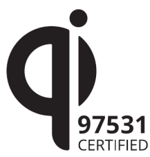

ନିକୋଲା ଟେସଲାଙ୍କ ଦ୍ଵାରା ପ୍ରମାଣିତ ଚୁମ୍ବକୀୟ ପ୍ରତିଧ୍ଵନିତ ସଂଯୋଗ (magnetic resonant coupling) ସିଦ୍ଧାନ୍ତ ଦ୍ଵାରା ବିନା ତାରର ସଂଯୋଗରେ ବିଦ୍ୟୁତ ଶକ୍ତିକୁ ଦୁଇଟି ସର୍କିଟରେ ଏକ ଚୁମ୍ବକୀୟ କ୍ଷେତ୍ର ମଧ୍ୟରେ ପ୍ରସାରଣ କରାଯାଇପାରିଲା । ଏଣୁ ବେତାର ଚାରଜିଙ୍ଗ ଟେକ୍ନୋଲୋଜ୍ଞ ପ୍ରାୟ ଶହେ ବର୍ଷରୁ ପୁରୁଣା । ହେଲେ ସେତେବେଳେ ଏହାର କୌଣସି ଉପଯୋଗୀତା ନଥିଲା।
ସାଧାରଣ ଚାର୍ଜରର କାର୍ଯ୍ୟ ପ୍ରକ୍ରିୟାରେ ବିଦ୍ୟୁତ ଶକ୍ତି, ଘରେ ଥିବା ଏଲେକ୍ଟ୍ରି ବୋର୍ଡରୁ ପ୍ଲଗ ଦେଇ ଚାର୍ଜରରେ ଥିବା ଏକ ଟ୍ରାନ୍ସଫର୍ମରକୁ ଯାଇଥାଏ । ଟ୍ରାନ୍ସଫର୍ମର କାମ ହେଲା ଭୋଲ୍ଟେଯକୁ କମ ବେସୀ କରାଇବା ।
ତେବେ ଏହା ଭୋଲଟେଜ କମିଲେ କରେଣ୍ଟ କମ ହୁଏ ଓ ଭୋଲଟେଜ ବଢିଲେ କରେନ୍ଟ ମଧ୍ୟ ବଢିଥାଏ । ଏଣୁ ଚାର୍ଜର ମଧ୍ୟରେ ଥିବା ଟ୍ରାଂସଫାର୍ମର ଦ୍ଵାରା ଆମ ଏଲେକ୍ଟ୍ରି ବୋର୍ଡ (ବା ଅଉଟଲେଟ)ରୁ ଭୋଲଟେଜକୁ କମ କରି, ଏହା ଅପର ପାର୍ଶ୍ଵରେ ଆମର ଫୋନ୍ ପାଇଂ ଆବ୍ଯଶ୍ଯକୀୟ ପାୱାର ଯୋଗାଇ ଦେଇଥାଏ । ଟ୍ରାନ୍ସଫର୍ମର ଚୁମ୍ବକୀୟ କ୍ଷେତ୍ରର ପରିବର୍ତ୍ତନ ଦ୍ୱାରା ବିଦ୍ୟୁତଶକ୍ତି ଉତ୍ପାଦନ କରିପାରେ ଯାହାକୁକି ଇନଡକଶନ କୁହାଯାଏ ।
କିନ୍ତୁ ୱାୟାରଲେସ ଚାର୍ଜରରେ ଥିବା ଟ୍ରାନ୍ସଫର୍ମରର ଗୋଟିଏ ପାର୍ଶ୍ଵ ଚାର୍ଜିଂ ପ୍ୟାଡରେ ଓ ଅନ୍ୟ ପାର୍ଶ୍ଵଟି ଫୋନ ମଧ୍ୟରେ ଥାଏ, ଚାର୍ଜ କରିବା ପାଇଁ ଆପଣଙ୍କୁ ଆପଣଙ୍କ ଫୋନକୁ ଚାରଜିଙ୍ଗ ପ୍ୟାଡ ଉପରେ ରଖିବାକୁ ପଡିବ । ତେବେ ୨୦୧୩ରେ ଏକ ନୂତନ ପ୍ରକାରର ୱାୟରଲେସ ଚାର୍ଜର ଆସିଥିଲା, ଯାହାକୁ ୧ ମିଟର ଦୂରତା ମଧ୍ୟରେ ବିନା ତାରର ସଂଯୋଗରେ ଚାର୍ଜ କରିହେଲା । ଏହାକୁ ରେଜୋନାଣ୍ଟ ଚାର୍ଜର କୁହାଯାଏ । ତେବେ ଏହି ଚାର୍ଜରରେ ଥିବା ଟ୍ରାଂସମିଟର ଏକ ସୁନିର୍ଦିଷ୍ଟ ଫ୍ରିକୁୟେନ୍ସୀରେ ବିଦ୍ୟୁତ ତରଂଗ ପ୍ରସାରଣ କରିଥାଏ ଓ ଫୋନ୍ ରେ ଥିବା ରିସିଭର ଏହାକୁ ଗ୍ରହଣ କରି ଚାର୍ଜ କରିଥାଏ ।
ଏବେ ମନରେ ପ୍ରଶ୍ନ ଉଠେ, ଏହି ଟେକ୍ନୋଲୋଜିର ବ୍ୟବହାର ଏତେ କମ କାହିଁକି ?
ଏହାର କାରଣ ହେଲା, ଏହି ଟେକ୍ନୋଲୋଜିର ପରିମାପକ ସଂସ୍ଥାରୁ ସ୍ଥିର ହୋଇ ନଥିବାରୁ, ଏହାକୁ ବ୍ୟବହାର କରିବାରେ ଅସୁବିଧା ହୁଏ । ତେବେ ଆପଲ, ସାମସଙ୍ଗ, ଭଳି ବଡ ବଡ କମ୍ପାନୀମାନେ Qi କମ୍ପାନୀର ୱାୟରଲେସ ଚାର୍ଜରର ଟେକ୍ନୋଲୋଜି ବ୍ୟବହାର କରନ୍ତି । ଅଧିକାଂଶ ୱୟରଲେସ ଚାର୍ଜର ରେ ଏହି ଲୋଗୋଟି ରହିଥିବା ଦରକାର ©2018 Wireless Power Consortium